Part one
One Saturday
19 October 2024, from 14:59 to 21:40. One camera, one 35mm lens.
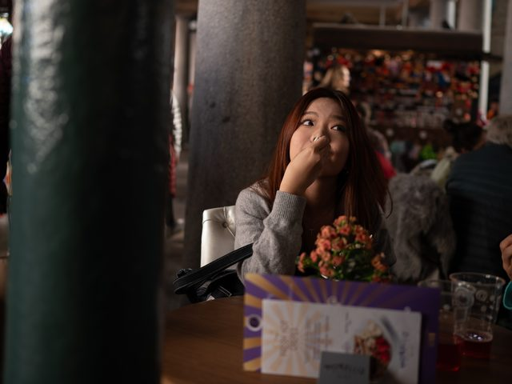
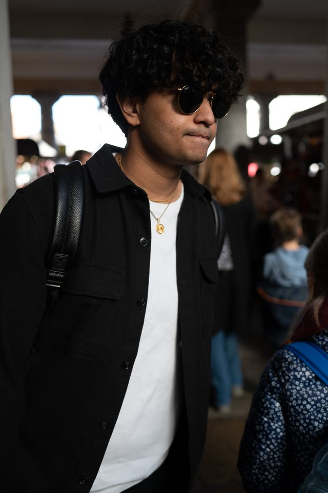
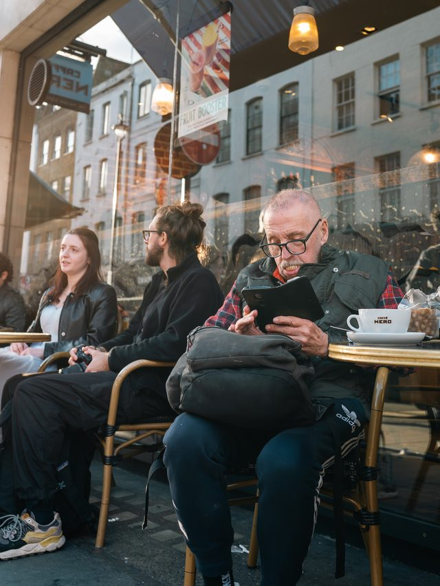
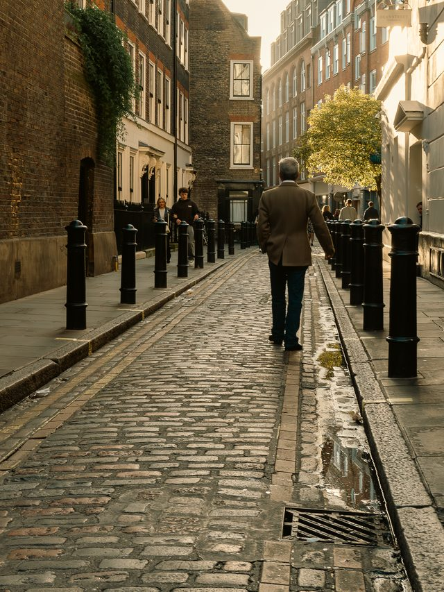
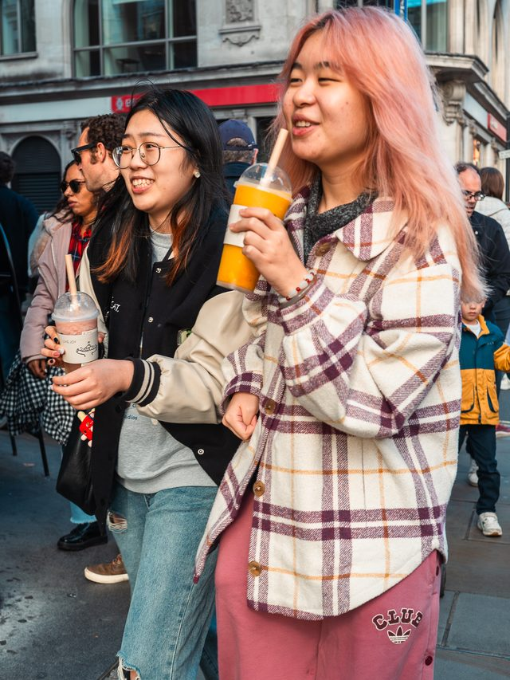
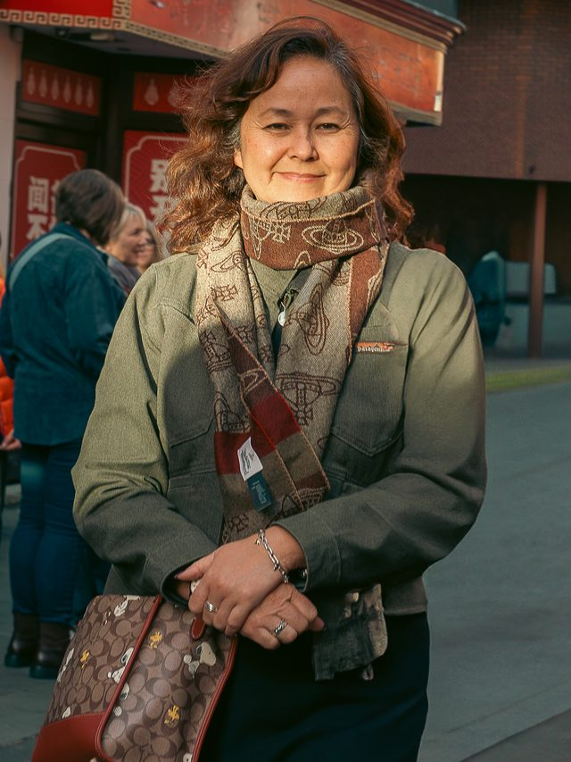
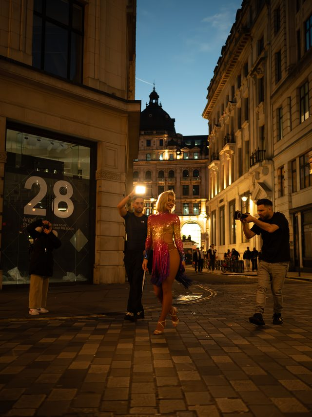
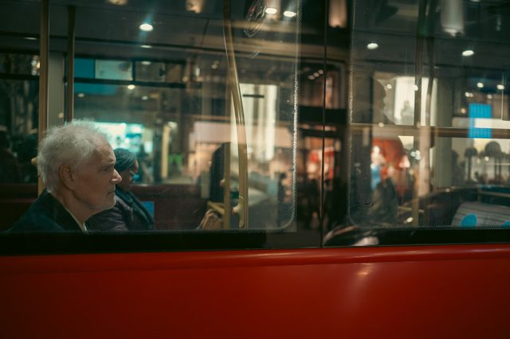
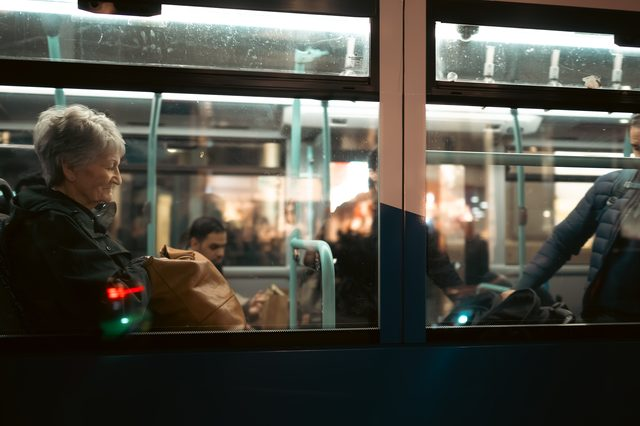
For one frame everyone was moving in a different direction under the church.
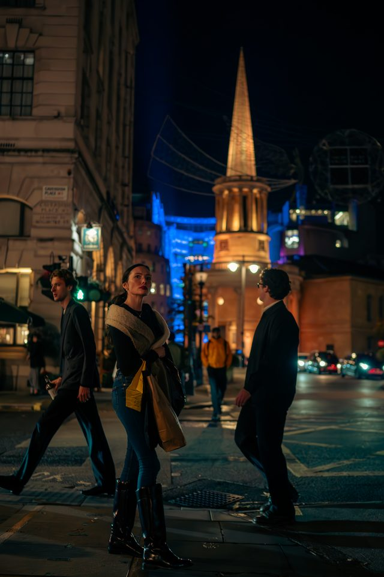
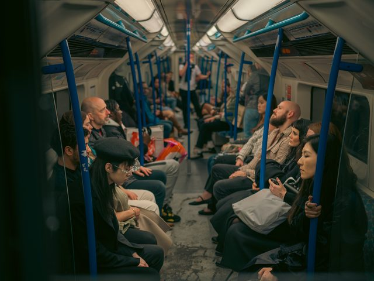
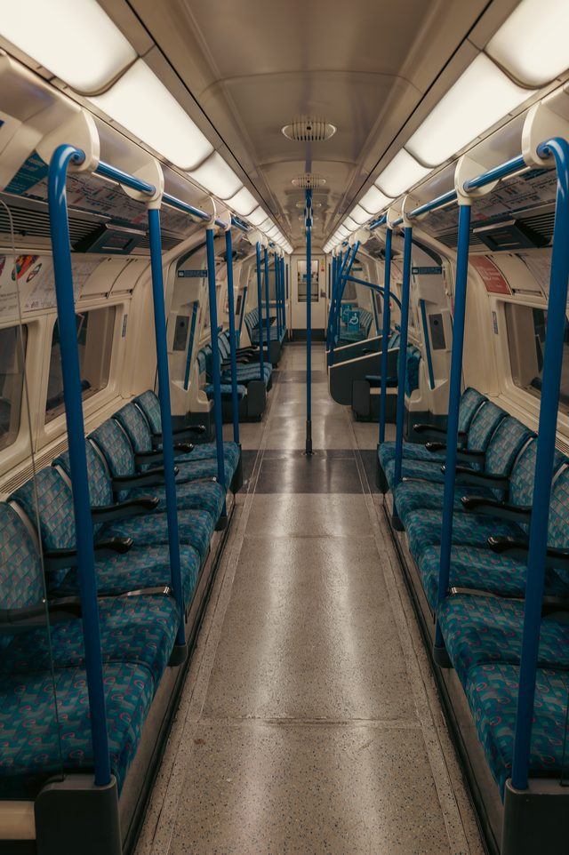
Part two
Other nights
Soho, Brick Lane, the river and the stations. 2024 to 2026.
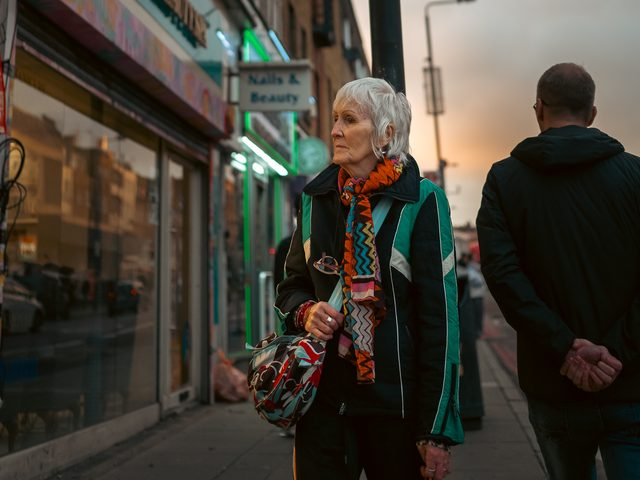
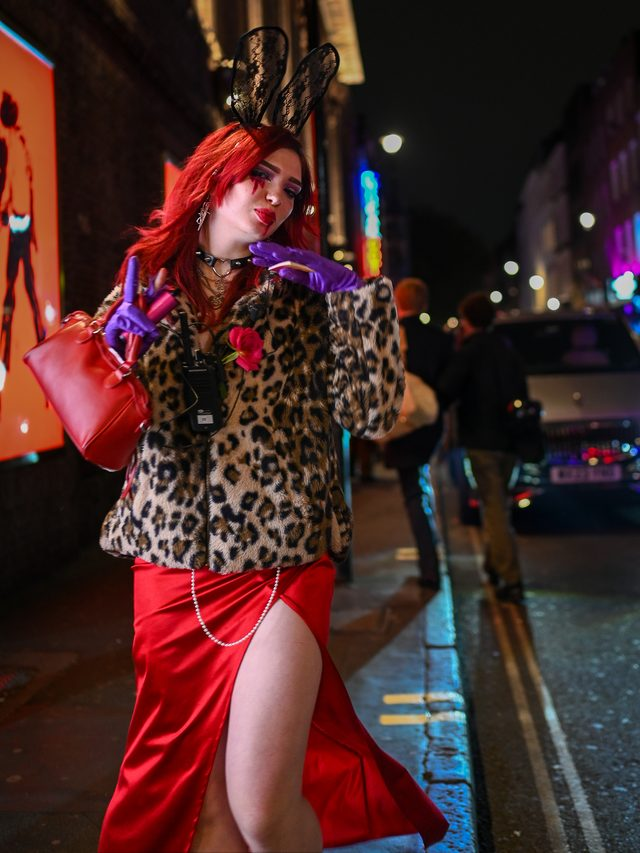
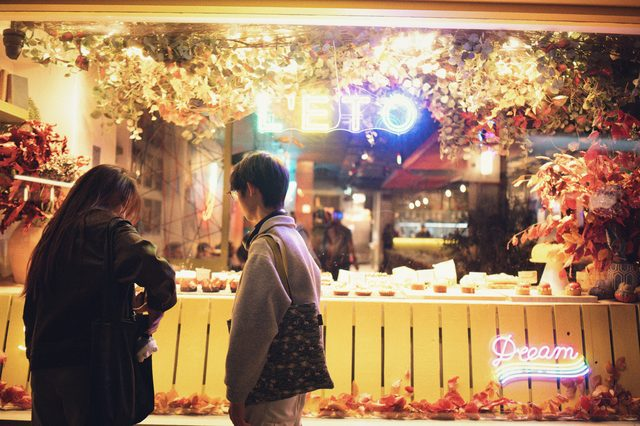
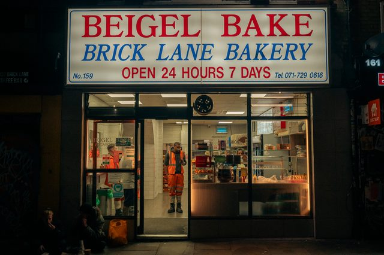
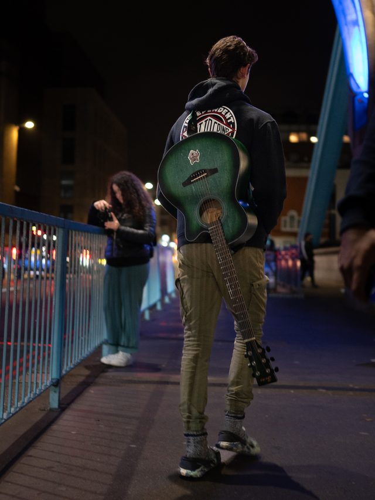
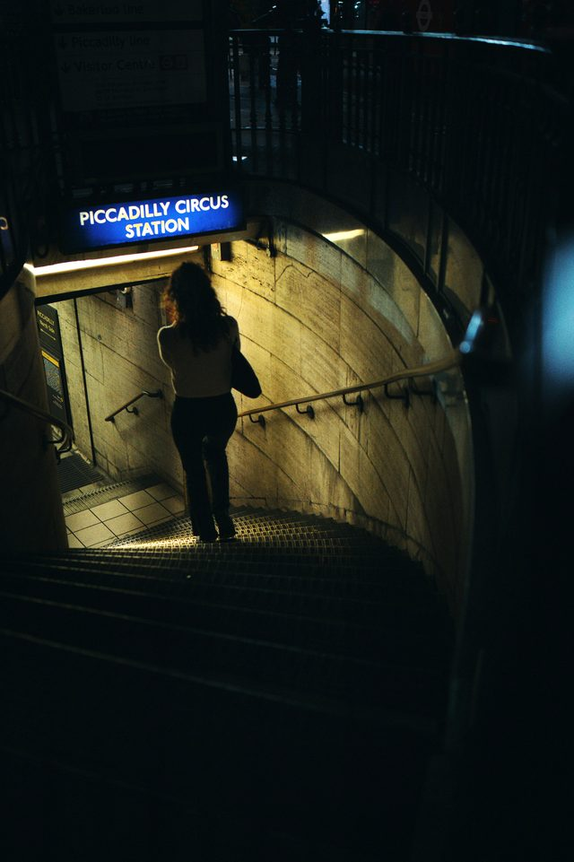
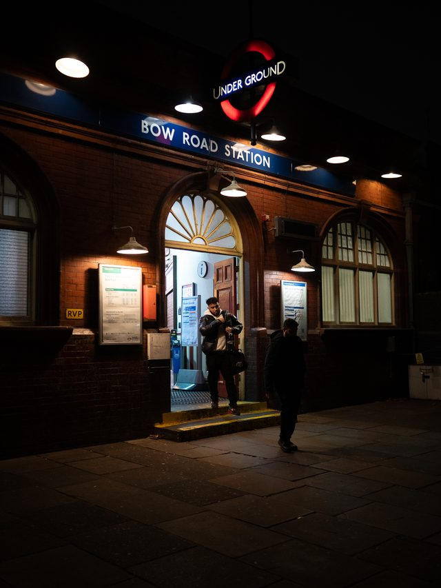
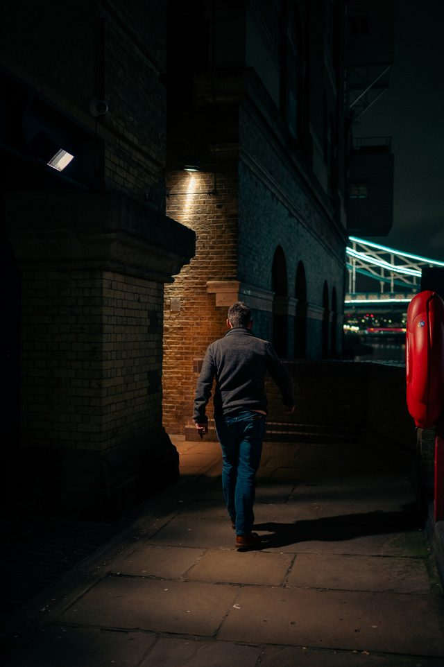